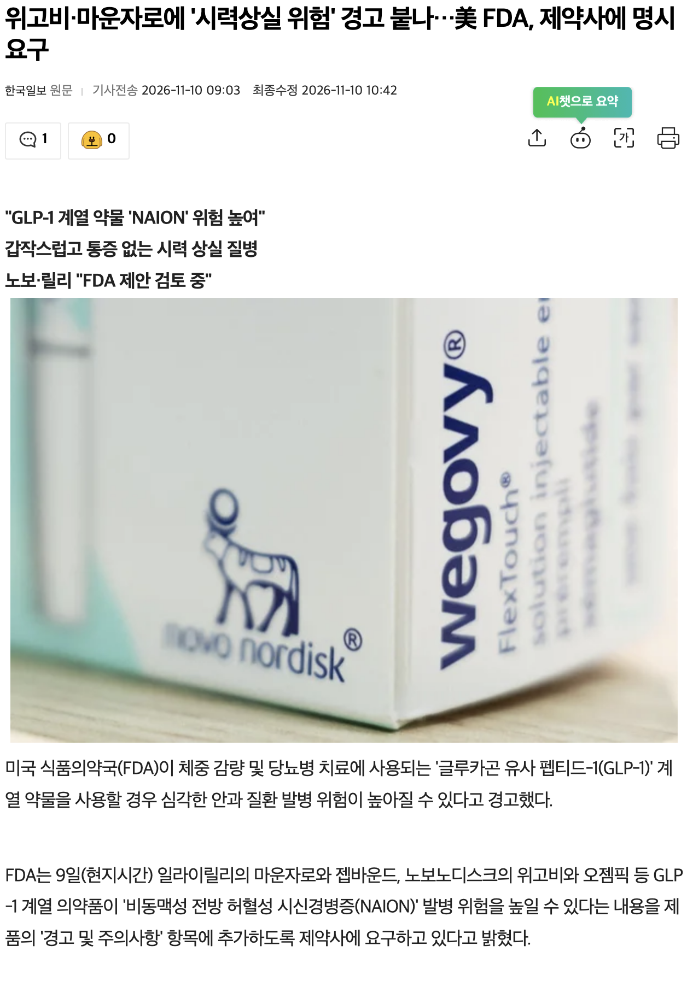
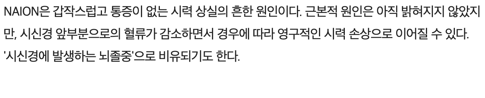
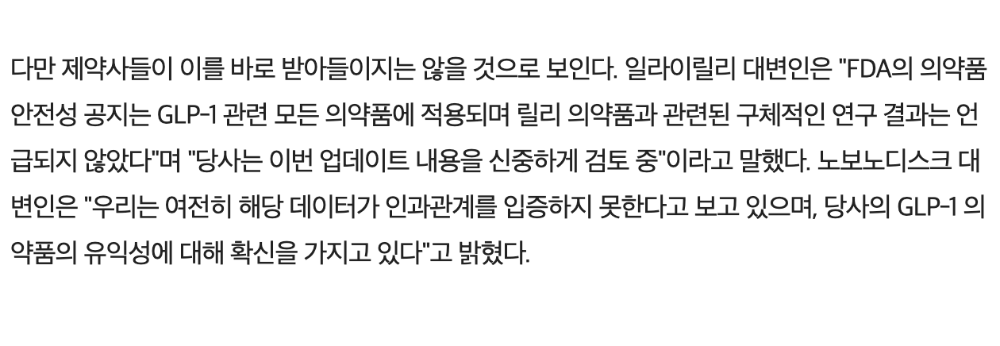
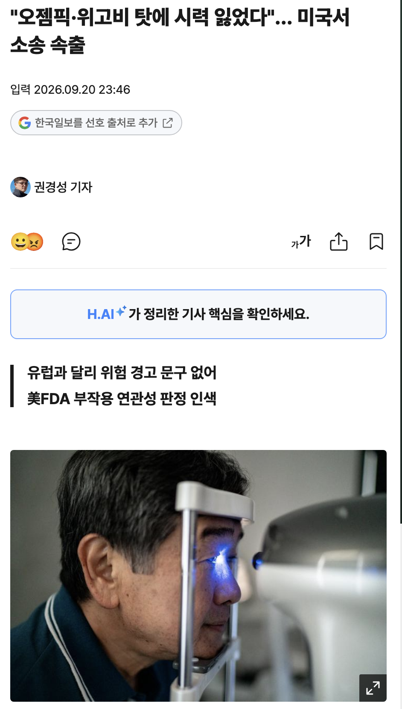
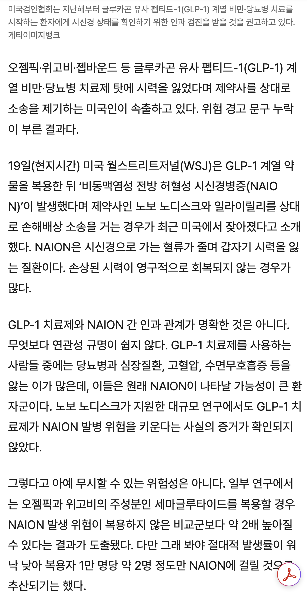
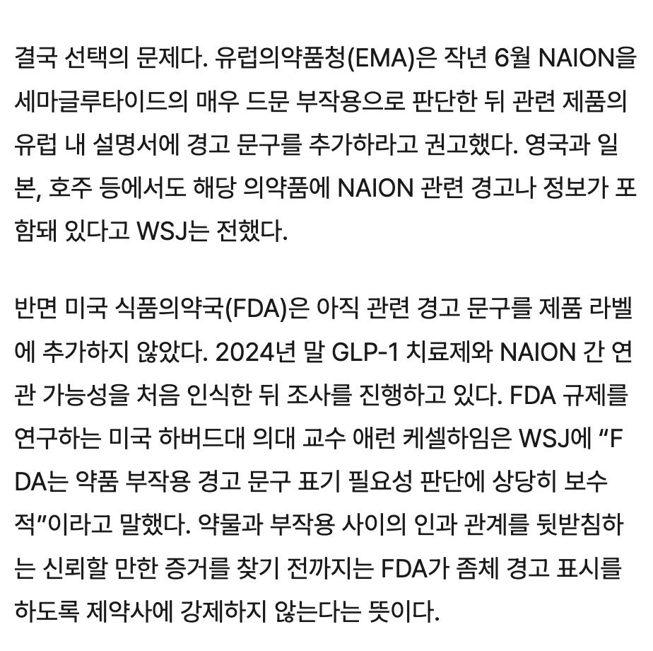
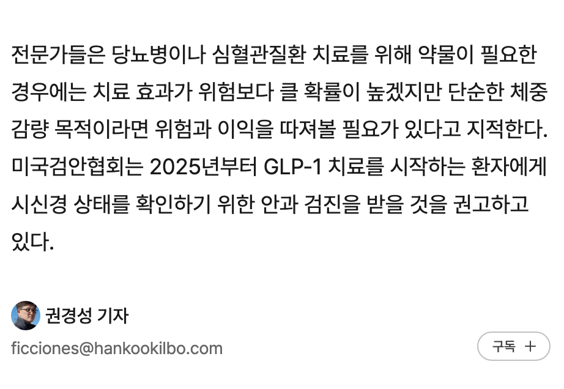

- 마운자로나 위고비 등 GLP-1 계열 약물 복용 뒤 NAION이 발생했다며 제약사 대상으로 거는 소송이 증가함
- NAION은 시신경으로 가는 혈류가 줄며 갑자기 시력을 잃는 질환 (시신경에 발생하는 뇌졸중 비슷)
- 해당 치료제의 주성분인 세마글루타이드를 복용할 경우 NAION 발생 위험이 복용하지 않은 비교군보다 2배 높아진다는 연구 결과들이 있음
- 다만 절대적 발생률이 낮기 때문에 그 수치도 크진 않음 (1만명당 2명꼴)
- 해당 제약사들은 인정하지 않는중
- 유럽의약품청에서는 관련 제품 설명서에 경고 문구를 추가하라고 권고함. 영국, 일본, 호주에는 관련 경고가 포함돼 있음
- 미국 FDA는 아직 경고표시를 강제하지 않는 중
- 미국검안협회는 2025년부터 GLP-1 치료를 시작하는 환자에게 시신경 상태 확인을 위한 안과 검진을 받을 것을 권고함
살빼려다 눈알뺄수도
전체 발생통계도 10만명당 2건정도네
본문에도 명시 돼 있는 것 처럼
당뇨 등 성인병 환자들이 주로 투약하는 특성을 보면 그렇게 높은 것도 아닌 것 같은데..